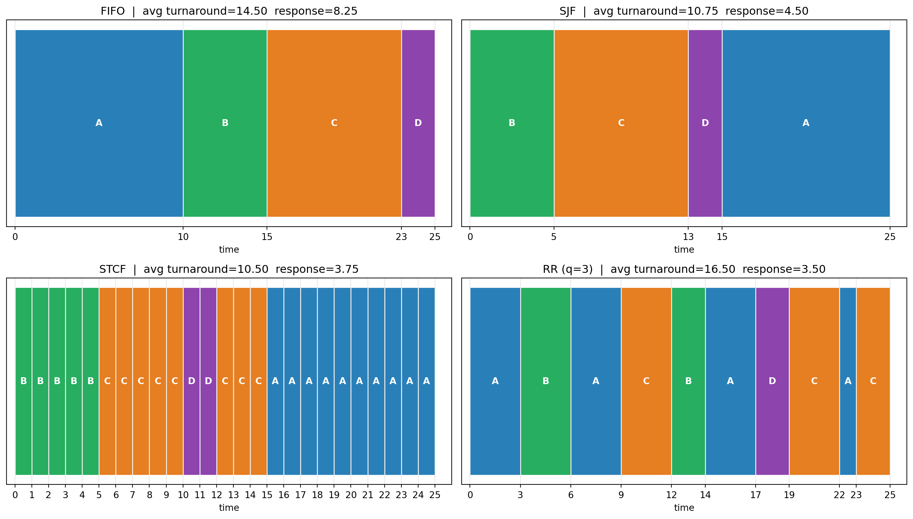
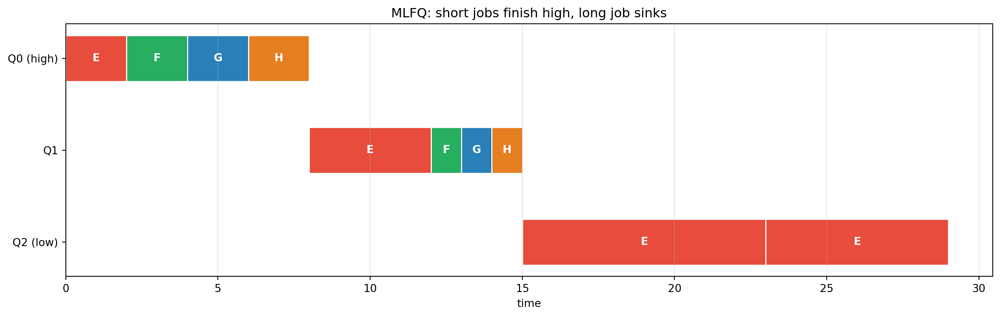

stateDiagram-v2
[*] --> Ready
Ready --> Running: dispatched
Running --> Ready: preempted / descheduled
Running --> Blocked: I/O request (I/O initiate)
Blocked --> Ready: I/O done
Running --> [*]: exit
Operating Systems: Three Easy Pieces, Part 1 — CPU Virtualization
Processes and their API, limited direct execution, and CPU scheduling from FIFO and SJF through round-robin, multi-level feedback queues, lottery scheduling, and multi-CPU affinity — following OSTEP, Chapters 4–11
Computer Science
Operating Systems
Virtualization
Processes
CPU Scheduling
Systems Programming
A first-principles treatment of CPU virtualization following Operating Systems: Three Easy Pieces. It covers the definition of a process and its machine state, the process API (fork, wait, exec, file descriptors, pipes) and shell implementation, limited direct execution with user and kernel modes, system calls, traps, and context switches, cooperative versus preemptive scheduling with timer interrupts, and the core CPU scheduling algorithms and metrics: turnaround and response time, FIFO, SJF, STCF, round-robin, multi-level feedback queues with priority boost, lottery and stride scheduling and CFS, and multi-processor scheduling with cache affinity, load balancing, and work stealing, with an executable Python laboratory that simulates every scheduler and plots Gantt charts and performance metrics.
The operating system runs a magic trick: it takes one physical CPU and makes it appear that many programs are running at once. It also takes physical memory and gives each program the illusion of a private, contiguous address space. OSTEP calls these virtualization, and it is the organizing idea behind everything an OS does.
This is Part 1 of a three-part series following Operating Systems: Three Easy Pieces (OSTEP). Here we cover CPU virtualization: Chapters 4–11. Part 2 covers memory virtualization, and Part 3 covers concurrency.
TipThe Series
- Part 1 — CPU Virtualization (this article)
- Part 2 — Memory Virtualization
- Part 3 — Concurrency
0.1 Companion Reading
1 The Three Easy Pieces
OSTEP reduces operating systems to three fundamental concerns:
- Virtualization — the OS gives each process the illusion of a private CPU and a private memory.
- Concurrency — managing multiple simultaneous actors (threads, interrupts) safely.
- Persistence — storing data reliably across crashes and reboots.
Virtualization itself splits into CPU virtualization (this article) and memory virtualization (Part 2). The recurring design tension is mechanism versus policy: a mechanism is how something is done (a context switch, a page table walk); a policy is what to do (which process to run next, which page to evict). The OS provides mechanisms; schedulers and replacement policies embody policy.
2 Processes
A process is a running program. At any instant it can be described by its machine state:
- Memory — the address space: code, data, heap, stack.
- Registers — the program counter, stack pointer, general-purpose registers.
- I/O state — open files, network sockets, and other resources.
2.1 From Program to Process
A program on disk is passive. To run it, the OS loads its code and static data into memory (eagerly or lazily), allocates a stack and a heap, initializes registers, and starts execution at main. This transformation from disk image to running process is the core of virtualization.
2.2 Process States
OSTEP’s canonical simplification:
- Running — executing on the CPU.
- Ready — able to run, but waiting for the CPU.
- Blocked — waiting for some event (I/O completion); not runnable.
A process moves from ready to running when dispatched, from running to ready when descheduled (preempted), and from running to blocked when it initiates I/O. Transitions are triggered by the OS, which maintains a process list of Process Control Blocks (PCBs) — a data structure per process holding its state, registers, and metadata.
3 The Process API
Unix’s process creation interface is famously strange and famously powerful.
| Call | Purpose |
|---|---|
fork() |
create a nearly identical copy of the calling process |
wait() / waitpid() |
wait for a child to finish |
exec() (family) |
replace the current program with a different one |
exit() |
terminate the process |
3.1 fork(): The Weird Part
fork() returns twice: once in the parent (returning the child’s PID) and once in the child (returning 0). The child is a copy of the parent — same memory contents, same open file descriptors — but with its own address space and a different return value. The OS does not guarantee which runs first.
int pid = fork();
if (pid < 0) { perror("fork"); }
else if (pid == 0) { printf("child: pid=%d\n", getpid()); }
else { printf("parent: child=%d\n", pid); }3.2 exec() and the Shell
exec() does not create a process; it transforms one. It loads a new program into the current address space and begins executing it — and on success it never returns. This is why the shell works as it does:
flowchart TD
A["Shell: read command"] --> B["fork()"]
B -->|parent| C["wait() for child"]
B -->|child| D["exec(<command>)"]
D --> E["program runs, exits"]
E --> C
C --> A
fork() + exec() + wait() is the entire mechanism behind a shell prompt. Redirecting output is done with dup2, which manipulates file descriptors before exec:
int fd = open("out.txt", O_WRONLY | O_CREAT | O_TRUNC, 0644);
dup2(fd, STDOUT_FILENO); // make stdout go to the file
close(fd);
execvp("ls", argv); // now `ls` writes to out.txtPipes connect descriptors of two processes: pipe() creates a read end and a write end; fork, dup2, and exec wire them together — the same three calls implement ls | wc -l.
4 Limited Direct Execution
The naive approach — just run the program on the CPU — fails for two reasons: the program could do something privileged (access hardware, disable interrupts), and the OS must be able to regain control to multiplex the CPU. OSTEP’s solution is limited direct execution (LDE): run the program directly, but set up hardware protections and a controlled way to enter the kernel.
4.1 User Mode and Kernel Mode
The CPU has at least two privilege levels. Application code runs in user mode, where privileged instructions (I/O, setting the timer, halting) trap. The OS runs in kernel mode, where everything is permitted.
4.2 System Calls and Traps
To request a privileged service, a user program executes a system call — a special trap instruction that switches to kernel mode and jumps to a handler. The kernel validates the request, performs it, and returns. The trap table is configured at boot so the process cannot redirect traps to its own code.
sequenceDiagram
participant P as Process (user mode)
participant K as Kernel (kernel mode)
P->>P: normal execution
P->>K: trap (system call, e.g. read)
Note over K: save registers to kernel stack
K->>K: validate + service request
K->>P: return-from-trap
Note over P: restore registers, resume
4.3 Context Switching
To switch between processes, the OS must save the current process’s registers and restore another’s — a context switch. The mechanism is subtle: the kernel saves user registers, switches to the kernel stack, and later executes a return-from-trap that restores a different process’s registers. This is the concrete machinery behind the “dispatch” and “preempt” transitions above.
4.4 Cooperative vs Preemptive
- Cooperative scheduling relies on processes voluntarily yielding (via system calls or faults). If a process loops forever, the system hangs — this is how early Mac OS and some systems behaved.
- Preemptive scheduling uses a timer interrupt: the OS sets a timer to fire periodically; when it fires, the CPU traps to the kernel, which regains control and may switch processes. The timer interrupt is what makes a modern general-purpose OS responsive.
5 CPU Scheduling
Now the central policy question: given a set of ready processes, which should run?
5.1 Metrics
- Turnaround time \(T_{\text{turnaround}} = T_{\text{completion}} - T_{\text{arrival}}\) — total time from arrival to finish.
- Response time \(T_{\text{response}} = T_{\text{firstrun}} - T_{\text{arrival}}\) — time until the process first runs.
- Fairness, throughput, overhead, and meeting deadlines also matter.
Turnaround optimizes batch throughput; response optimizes interactivity. They often conflict.
5.2 FIFO, SJF, and STCF
FIFO (First In, First Out) is trivial but suffers the convoy effect: one long job delays every short job behind it, wrecking average turnaround. A single 100 ms job at the head makes three 10 ms jobs wait.
SJF (Shortest Job First) runs the shortest ready job to completion. It is provably optimal for average turnaround when all jobs arrive together — but it is non-preemptive, so a long job already running still blocks short arrivals.
STCF (Shortest Time-to-Completion First) adds preemption: whenever a new job arrives, the scheduler picks the job with the least remaining time. This minimizes average turnaround for arbitrary arrival times, but it starves long jobs and gives terrible response times.
5.3 Round-Robin
Round-Robin (RR) runs each job for a fixed time slice (quantum) and cycles. It minimizes response time and feels fair and interactive, but it inflates turnaround time because it stretches out the finishing of every job. The quantum is a tuning knob: too small and context-switch overhead dominates; too large and RR degrades toward FIFO.
| Scheduler | Preemptive | Optimizes | Weakness |
|---|---|---|---|
| FIFO | no | simplicity | convoy effect |
| SJF | no | avg turnaround (with SJF assumptions) | bad with late short jobs |
| STCF | yes | avg turnaround | starvation, poor response |
| RR | yes | response time, fairness | worse turnaround |
| MLFQ | yes | both, adaptively | tuning complexity |
5.4 The Fundamental Trade-off
OSTEP states it bluntly: minimizing response time and minimizing turnaround time are in direct conflict. SJF/STCF finish jobs quickly on average but make short jobs wait behind long ones; RR responds quickly but finishes slowly. Real systems resolve this with multi-level feedback queues.
6 Multi-Level Feedback Queue (MLFQ)
The MLFQ is the classic attempt to get both good turnaround and good response without knowing job lengths in advance. It uses several priority queues and observes behavior to infer whether a job is short or long.
Rules (the classic version):
- If
Priority(A) > Priority(B), A runs (B does not). - If
Priority(A) == Priority(B), A and B run round-robin. - When a job enters the system, it starts at the highest priority.
- If a job uses its entire time slice, its priority is reduced (it is probably a long-running CPU hog).
- If a job yields the CPU before its slice expires (I/O or interaction), it stays at its priority (it is probably interactive).
- After some period \(S\), boost all jobs to the top priority (priority boost), preventing starvation and adapting to changed behavior.
The MLFQ approximates SJF for short jobs (they finish before using a full slice) while still making progress on long jobs. It is vulnerable to gaming (yield just before the slice ends to keep high priority), which later rules (e.g., accounting CPU time cumulatively) address. Parameters — number of queues, slice lengths, boost interval — are all policy choices.
8 Multi-CPU Scheduling
With multiple CPUs, new problems appear:
- Cache affinity. A thread’s data may be hot in one CPU’s cache. Migrating it to another CPU hurts performance, so schedulers prefer to keep running a thread where it ran.
- Single queue vs multi-queue. A single global queue load-balances naturally but suffers lock contention and poor affinity. Multi-queue designs give each CPU its own queue (good affinity, cache-local) and require explicit load balancing.
- Work stealing. An idle CPU steals a task from another CPU’s queue, typically from the tail (to avoid contending with the owner working the head). This is the dominant modern design (e.g., Go’s runtime, Java’s ForkJoinPool, Cilk).
Synchronization across CPUs adds overhead, which is why multi-CPU schedulers favor designs that avoid a single global lock — the bridge to Part 3.
9 Laboratory: Scheduling Algorithms
We now simulate the schedulers and measure them on a common workload. We use a small job set with staggered arrivals to expose the differences.
Code
import numpy as np
import matplotlib.pyplot as plt
# Workload: (pid, arrival, burst) -- classic OSTEP-style mix
jobs = [("A", 0, 10), ("B", 0, 5), ("C", 5, 8), ("D", 10, 2)]
COLORS = {"A": "#2980b9", "B": "#27ae60", "C": "#e67e22", "D": "#8e44ad"}
def schedule_fifo(jobs):
t, timeline, done = 0, [], {}
for pid, arr, burst in sorted(jobs, key=lambda j: j[1]):
start = max(t, arr)
timeline.append((pid, start, start + burst))
done[pid] = (start + burst, start, arr)
t = start + burst
return timeline, done
def schedule_sjf(jobs):
# non-preemptive, choose shortest burst among arrived
remaining = list(jobs)
t, timeline, done = 0, [], {}
while remaining:
arrived = [j for j in remaining if j[1] <= t]
if not arrived:
t = min(j[1] for j in remaining); continue
pid, arr, burst = min(arrived, key=lambda j: j[2])
timeline.append((pid, t, t + burst))
done[pid] = (t + burst, t, arr)
t += burst
remaining.remove((pid, arr, burst))
return timeline, done
def schedule_stcf(jobs):
# preemptive shortest-time-to-completion
rem = {pid: burst for pid, arr, burst in jobs}
arrd = {pid: arr for pid, arr, burst in jobs}
t, timeline, done, first = 0, [], {}, {}
total = sum(rem.values())
while total > 0:
ready = [p for p in rem if rem[p] > 0 and arrd[p] <= t]
if not ready:
t += 1; continue
p = min(ready, key=lambda x: rem[x])
if p not in first:
first[p] = t
timeline.append((p, t, t + 1))
rem[p] -= 1; total -= 1; t += 1
if rem[p] == 0:
done[p] = (t, first[p], arrd[p])
return timeline, done
def schedule_rr(jobs, quantum=3):
rem = {pid: burst for pid, arr, burst in jobs}
arrd = {pid: arr for pid, arr, burst in jobs}
order = [pid for pid, arr, burst in sorted(jobs, key=lambda j: j[1])]
t, timeline, done, first, queue = 0, [], {}, {}, []
while any(rem[p] > 0 for p in rem) or queue:
for p in order:
if arrd[p] <= t and rem[p] > 0 and p not in queue and not any(x == p for x, _, _ in timeline if _ == t):
if p not in queue:
queue.append(p)
if not queue:
t += 1; continue
p = queue.pop(0)
if p not in first:
first[p] = t
run = min(quantum, rem[p])
timeline.append((p, t, t + run))
rem[p] -= run; t += run
for q in order:
if arrd[q] <= t and rem[q] > 0 and q != p and q not in queue:
queue.append(q)
if rem[p] > 0:
queue.append(p)
else:
done[p] = (t, first[p], arrd[p])
return timeline, done
def metrics(done):
tt = [c - a for (c, f, a) in done.values()]
rt = [f - a for (c, f, a) in done.values()]
return np.mean(tt), np.mean(rt)
schedulers = {
"FIFO": schedule_fifo(jobs),
"SJF": schedule_sjf(jobs),
"STCF": schedule_stcf(jobs),
"RR (q=3)": schedule_rr(jobs, 3),
}
fig, axes = plt.subplots(2, 2, figsize=(14, 8))
ax_flat = axes.flatten()
for ax, (name, (tl, done)) in zip(ax_flat[:4], schedulers.items()):
for pid, s, e in tl:
ax.barh(0, e - s, left=s, height=0.5, color=COLORS[pid],
edgecolor="white", align="center")
ax.text((s + e) / 2, 0, pid, ha="center", va="center",
color="white", fontweight="bold")
tt, rt = metrics(done)
ax.set_title(f"{name} | avg turnaround={tt:.2f} response={rt:.2f}")
ax.set_yticks([]); ax.set_xlabel("time"); ax.set_xlim(-0.5, max(e for _, _, e in tl) + 1)
allt = sorted({s for _, s, _ in tl} | {e for _, _, e in tl})
ax.set_xticks(allt); ax.grid(axis="x", alpha=0.3)
plt.tight_layout(); plt.show()
print("=== SCHEDULER METRICS ===")
print(f"{'scheduler':>10} {'avg turnaround':>15} {'avg response':>13}")
for name, (tl, done) in schedulers.items():
tt, rt = metrics(done)
print(f"{name:>10} {tt:15.2f} {rt:13.2f}")
=== SCHEDULER METRICS ===
scheduler avg turnaround avg response
FIFO 14.50 8.25
SJF 10.75 4.50
STCF 10.50 3.75
RR (q=3) 16.50 3.509.1 Multi-Level Feedback Queue
The next simulation implements a three-queue MLFQ with priority boost and shows how a CPU-bound job sinks while short jobs finish quickly.
Code
import matplotlib.pyplot as plt
def mlfq(jobs, slices=(2, 4, 8), boost=30):
# jobs: (pid, arrival, burst)
rem = {p: b for p, a, b in jobs}
arrd = {p: a for p, a, b in jobs}
prio = {p: 0 for p, a, b in jobs}
t, timeline, last_boost = 0, [], 0
total = sum(rem.values())
while total > 0:
if t - last_boost >= boost:
for p in prio:
prio[p] = 0
last_boost = t
ready = [p for p in rem if rem[p] > 0 and arrd[p] <= t]
if not ready:
t += 1; continue
p = min(ready, key=lambda x: (prio[x], arrd[x]))
q = prio[p]
run = min(slices[q], rem[p])
timeline.append((p, t, t + run, q))
rem[p] -= run; t += run; total -= run
if rem[p] > 0 and run == slices[q]:
prio[p] = min(q + 1, len(slices) - 1) # demote on full slice
return timeline, prio
jobs2 = [("E", 0, 20), ("F", 2, 3), ("G", 4, 3), ("H", 6, 3)]
tl, prio = mlfq(jobs2)
colors = {"E": "#e74c3c", "F": "#27ae60", "G": "#2980b9", "H": "#e67e22"}
fig, ax = plt.subplots(figsize=(13, 4.2))
for pid, s, e, q in tl:
ax.barh(q, e - s, left=s, height=0.5, color=colors[pid], edgecolor="white")
ax.text((s + e) / 2, q, pid, ha="center", va="center", color="white", fontweight="bold")
ax.set_yticks([0, 1, 2]); ax.set_yticklabels(["Q0 (high)", "Q1", "Q2 (low)"])
ax.set_xlabel("time"); ax.set_title("MLFQ: short jobs finish high, long job sinks")
ax.grid(axis="x", alpha=0.3); ax.invert_yaxis()
plt.tight_layout(); plt.show()
print("=== MLFQ FINAL PRIORITIES ===")
for p in prio:
print(f" {p}: priority level {prio[p]}")
print("\n E is CPU-bound and sinks; F, G, H are short and stay responsive.")
=== MLFQ FINAL PRIORITIES ===
E: priority level 2
F: priority level 1
G: priority level 1
H: priority level 1
E is CPU-bound and sinks; F, G, H are short and stay responsive.10 Summary
\[ \begin{aligned} &\textbf{Virtualization: } && \text{the OS fakes a private CPU and memory for each process.} \\[3pt] &\textbf{Process: } && \text{memory + registers + I/O state; states: running, ready, blocked.} \\[3pt] &\textbf{API: } && \texttt{fork}, \texttt{exec}, \texttt{wait}, \texttt{dup2}, \texttt{pipe} \text{ — the shell in four calls.} \\[3pt] &\textbf{LDE: } && \text{user/kernel modes, traps, context switches, timer interrupts.} \\[3pt] &\textbf{Metrics: } && \text{turnaround (batch) vs response (interactive) — fundamentally in tension.} \\[3pt] &\textbf{Schedulers: } && \text{FIFO, SJF, STCF, RR, MLFQ, lottery/stride, CFS.} \\[3pt] &\textbf{Multi-CPU: } && \text{cache affinity, multi-queue, load balancing, work stealing.} \end{aligned} \]
CPU virtualization is the OS’s first trick. Its second — giving every process the illusion of its own contiguous memory — is the subject of Part 2.
11 Curated References and Further Reading
- Arpaci-Dusseau, R. & Arpaci-Dusseau, A. (2018). Operating Systems: Three Easy Pieces. Arpaci-Dusseau Books. (Primary source: Chapters 4–11.) Free online at
pages.cs.wisc.edu/~remzi/OSTEP. - Ritchie, D. & Thompson, K. (1974). The UNIX Time-Sharing System. Communications of the ACM.
- Corbató, F. et al. (1962). An Experimental Time-Sharing System. AFIPS. (CTSS, and the ancestor of MLFQ.)
- Waldspurger, C. & Weihl, B. (1994). Lottery Scheduling: Flexible Proportional-Share Resource Management. OSDI.
- Linux kernel documentation. CFS (Completely Fair Scheduler) design.
- Blumofe, R. & Leiserson, C. (1999). Scheduling Multithreaded Computations by Work Stealing. JACM.